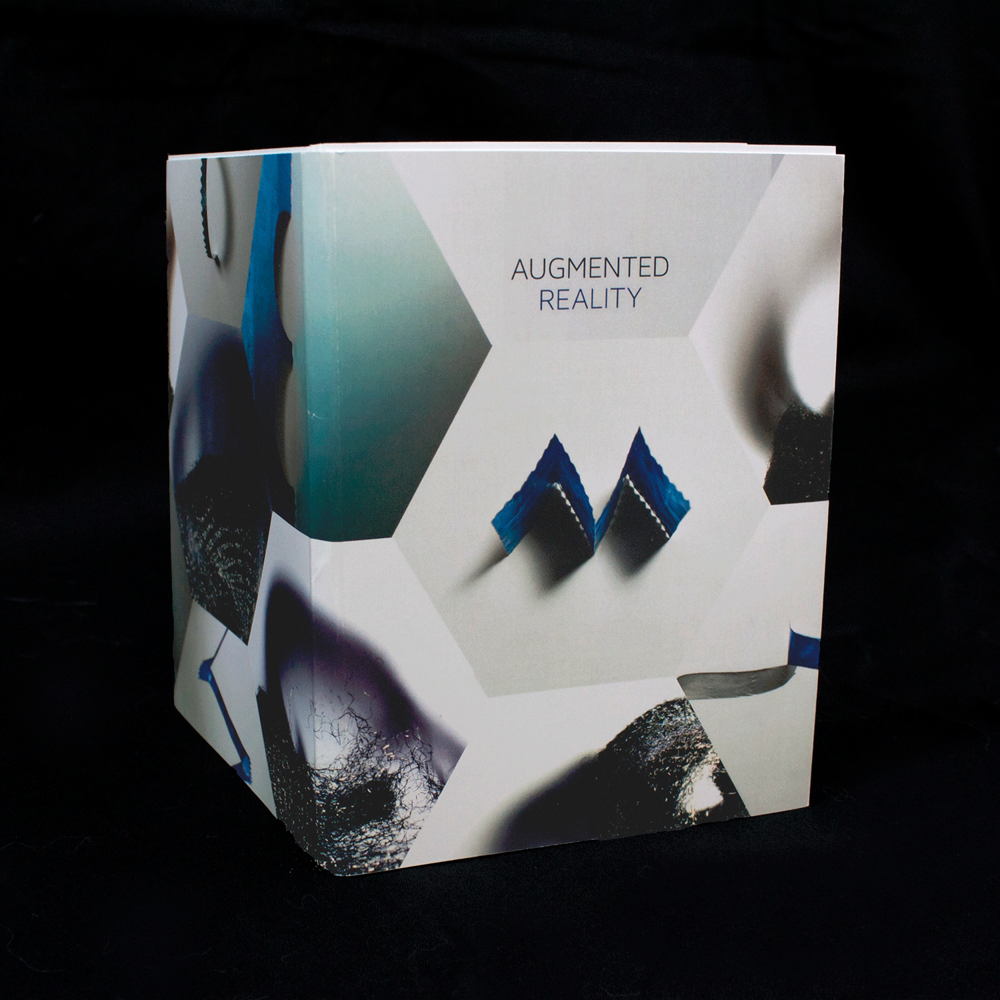

I created a poster/book visual compendium detailing the process, struggles, and discoveries of one of my courses at UC Davis titled, "Pattern, Form, and Surface." The class was highly experimental and pushed my design thinking in an entirely new way. I found that the underlying theme of discovery throughout the course was finding the ephemeral quality in objects. I learned to look past the main subject and medium, and looked instead at the shadows and reflections created by the object. Thus, my visual compendium is titled Augmented Reality as I had learned a new way to view the world.
